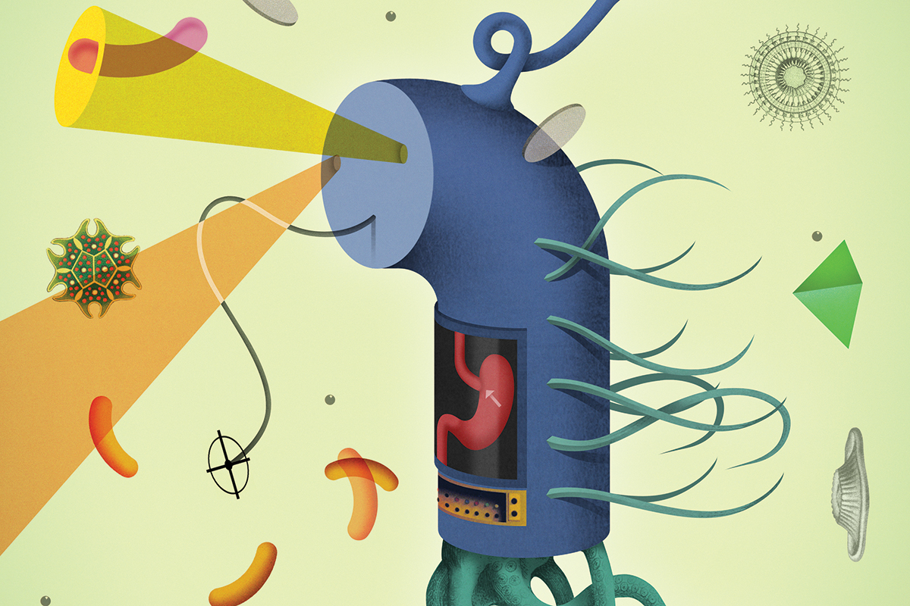

Press
Media Coverage
Scientific American
Scientific American has just published a great article describing our Office of Naval Research-funded project to engineer synthetic probiotics to fight obesity and related disorders.
New Scientist
Our research into utilizing bacterial two-component systems as sensors for engineered probiotics was recently written up in the New Scientist article "Smart probiotics: Wiring friendly bacteria to take out disease" by Ed Yong.
Image by Brett Ryder
Phys.org
"Bioengineers invent 'light tube array,' 'bioscilloscope' to test, debug genetic circuits."